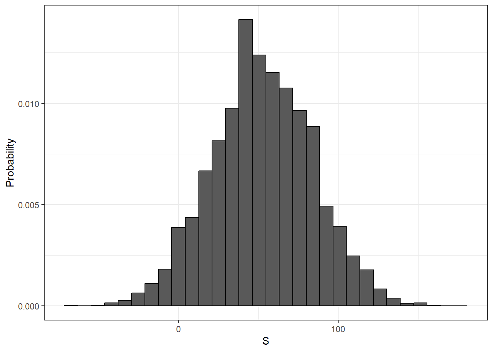
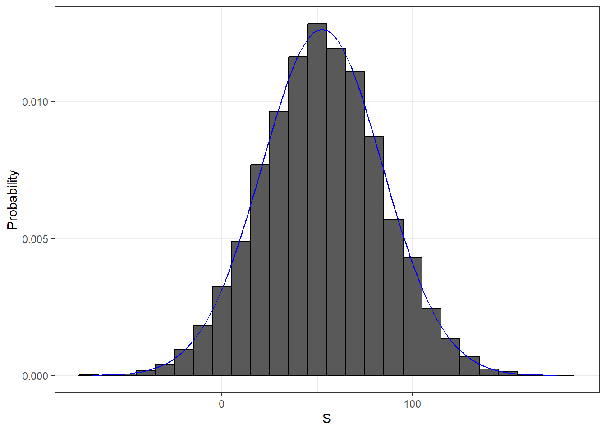

beads <- rep(c("red","blue"), times = c(2,3))
X <- ifelse(sample(beads,1) == "blue", 1,0)Random Variables
Random Variables
Random variables are numeric outcomes resulting from random processes. We can easily generate random variables using some of the simple examples we have shown. For example, define X to be 1 if a bead is blue and 0 otherwise (if it’s red).
Here X is a random variable: every time we select a new bead the outcome changes randomly:
ifelse(sample(beads,1) == "blue",1,0)[1] 1ifelse(sample(beads,1) == "blue",1,0)[1] 0ifelse(sample(beads,1) == "blue",1,0)[1] 0Sometimes it’s 1, sometimes it’s 0.
In data science we often deal with data that is affected by chance in some way: the data comes from a random sample, the data is affected by measurement error or the data measures some outcome that is random in nature. Being able to quantify the uncertainty introduced by randomness is one of the most important jobs of a data scientist. Statistical inference offers a framework for doing this as well as several practical tools. The first step is to learn how to mathematically describe random variables. We start with games of chance.
Sampling Models
Many data generation procedures, those that produce the data we study, can be modeled quite well as draws from an urn. For example, we can model the process of polling likely voters as drawing 0s (Republicans) and 1s (Democrats) from an urn containing the 0 and 1 code for all likely voters. In epidemiological studies, we often assume that the subjects in our study are a random sample from the population of interest. The data related to a specific outcome can be modeled as a random sample from an urn containing that outcome for the entire population of interest. Similarly, in experimental research, we often assume that the individual organisms we are studying, for example worms, flies, or mice, are a random sample from a larger population. Randomized experiments can also be modeled by draws from an urn given the way individuals are assigned into groups: when getting assigned you draw your group at random. Sampling models are therefore ubiquitous in data science. Casino games offer a plethora of examples of real world situations in which sampling models are used to answer specific questions. We will therefore start with such examples.
Suppose a very small casino hires you to consult on whether they should set up roulette wheels. To keep the example simple, we will assume that 1,000 people will play and that the only game you can play is to bet on red or black. The casino wants you to predict how much money they will make, or lose. They want a range of values and, in particular, they want to know the chance of losing money. If this probability is too high they will pass on installing roulette wheels since they can’t take the risk given that they need to pay their employees and keep the lights on.
We are going to define a random variable S that will represent the casino’s total winnings. Let’s start by constructing the urn. A roulette wheel has 18 red pockets, 18 black pockets and 2 green ones. So playing a color in one game of roulette is equivalent to drawing from this urn:
color <- rep(c("Black", "Red", "Green"), c(18, 18, 2))The 1,000 outcomes from 1,000 people playing are independent draws from this urn. Let’s simplify things by assuming that if red comes up, the gambler wins and the casino loses a dollar so we draw a -$1. Otherwise the casino wins a dollar and we draw a $1. We code these draws like this:
n <- 1000 #1000 players
X <- sample(ifelse(color == "Red", -1, 1), n, replace = TRUE) #the results of each player
X[1:10] #only show the first 10 elements [1] -1 1 1 -1 -1 -1 1 1 1 1Because we know the proportions of 1s and -1s, we can generate the draws with one line of code, without defining color:
X <- sample(c(-1,1), n, replace = TRUE, prob = c(9/19, 10/19)) # prob of red is 9/19, otherwise is 10/19Note that there are 18/38 = 9/19 red spaces, 18/38 = 9/19 black spaces and 2/38 green spaces (18/38 black spaces + 2/38 green spaces = 20/38 = 10/19).
We call this a sampling model since we are modelling the random behavior of roulette with the sampling of draws from an urn.
The total winnings S is simply the sum of these 1,000 independent draws:
X <- sample(c(-1,1), n, replace = TRUE, prob = c(9/19, 10/19))
S <- sum(X)
S[1] 22The probability distribution of a random variable
If you run the code above you see that \(S\) changes every time. This is, of course, because S is a random variable. The probability distribution of a random variable tells us the probability of the observed value falling in any given interval. So, for example, if we want to know the probability that the casino loses money, we are asking the probability that S is in the interval \(S < 0\).
Note that if we define a cumulative distribution function \(F(a) = \mbox{Pr}(S \leq a)\) then we will be able to answer any question related to the probability of events defined by our random variable \(S\), including the event \(S < 0\). We call this \(F\) the random variable’s distribution function.
We can estimate the distribution function for the random variable \(S\) by using a Monte Carlo simulation to generate many realizations of the random variable. With this code we run the experiment of having 1,000 people play roulette, over and over, specifically B= 10,000 times:
# Running a Monte Carlo Simulation
n <- 1000
B <- 10000
roulette_winning <- function(n){
X <- sample(c(-1,1),n, replace = TRUE, prob = c(9/19,10/19))
sum(X)
}
S <- replicate(B, roulette_winning(n))So now we can ask: “in our simulations, how often did we get sums larger than a?”.
mean(S <= a)This will be a very good approximation of \(F(a)\). In fact we can visualize the distribution by creating a histogram showing the probability \(F(b)-F(a)\) for several intervals \((a,b]\):

Now we can easily answer the casino’s question, “how likely is it that we lose money?”
mean(S < 0)[1] 0.0456which we can see is quite low (less than 5%).
From the histogram above we see that the distribution appears to be approximately normal. If in fact the distribution is normal then all we need to define the distribution is the average and the standard deviation. Because we have the original values from which the distribution is created, we can easily compute these:
mean(S)[1] 52.533sd(S)[1] 31.5991If we add a normal density, with this average and standard deviation, to the histogram above we see that it matches very well:

This average and this standard deviation have special names: they are referred to as the expected value and standard error of the random variable \(S\).
It turns out that statistical theory provides a way to derive the distribution of a random variable defined as independent random draws from an urn. Specifically, in our example above we can show that \((S+n)/2\) follows a binomial distribution. We therefore do not need to run Monte Carlo simulations to know the probability distribution of \(S\). We did this for illustrative purposes.
We can use the function dbinom and pbinom to compute the probabilities exactly. For example, to compute \(\mbox{Pr}(S < 0)\) we note that:
\[\mbox{Pr}(S < 0) = \mbox{Pr}\left(\frac{(S+n)}{2} < \frac{(0+n)}{2}\right)\]
and we can use the pbinom to compute \[\mbox{Pr}(S \leq 0)\]
pbinom(n/2, size = n, prob = 10/19) # probability of not picking red, the casino makes money[1] 0.05109794Because this is a discrete probability function, to get \(\mbox{Pr}(S < 0)\) rather than \(\mbox{Pr}(S \leq 0)\) we write
pbinom(n/2-1, size = n, prob = 10/19)[1] 0.04479591For the details of the binomial distribution you can consult any basic probability book or even Wikipedia.
We do not cover these details. Instead, we will discuss an incredibly useful approximation provided by mathematical theory that applies generally to sums and averages of draws from any urn: the Central Limit Theorem (CLT).
Distribution versus probability distributions
Before we continue, let’s make an important distinction and connection between the distribution of a list of numbers and a probability distribution. In the visualization section we described how any list of numbers \(x_1,\dots,x_n\) has a distribution. The definition is quite straight forward. We define \(F(a)\) as the function that answers the question “what proportion of the list is less than or equal to \(a\) ?”. Because they are useful summaries when the distribution is approximately normal, we define the average and standard deviation. These are defined with a straight forward operation of the vector containing the list of numbers x:
avg <- sum(x)/length(x)
s <- sqrt(sum((x - avg)^2) / length(x))A random variable \(X\) has a distribution function. To define this we do not need a list of numbers. It is a theoretical concept. In this case, we define the distribution as the \(F(a)\) that answers the question “what is the probability that \(X\) is less than or equal to \(a\) ?” There is no list of numbers.
However, if \(X\) is defined by drawing from an urn with numbers in it, then there is a list: the list of of numbers inside the urn. In this case, the distribution of that list is the probability distribution of \(X\) and the average and standard deviation of that list are the expected value and standard error of the random variable.
Another way to think about it, that does not involve an urn, is to run a Monte Carlo simulation and generate a very large list of outcomes of \(X\). These outcomes are a list of numbers. The distribution of this list will be a very good approximation of the probability distribution of \(X\). The longer the list the better the approximation. The average and standard deviation of this list will approximate the expected value and standard error of the random variable.
Notation for Random Variables
Note that in statistical textbooks upper case letters are used to denote random variables and we follow this convention here. Lower case letters are used for observed values. You will see some notation that includes both. For example, you will see events defined as \(X \leq x\). Here \(X\) is a random variable, making it a random event, and \(x\) is an arbitrary value and not random. So, for example, \(X\) might represent the number on a die roll and \(x\) will represent an actual value we see. So in this case, the probability of \(X=x\) is 1/6 regardless of the value of \(x\). Note that this notation is a bit strange when we ask questions about probability since \(X\) is not an observed quantity. Instead it’s a random quantity that we will see in the future. We can talk about what we expect it to be, what values are probable, but not what it is. But once we have data, we do see a realization of \(X\). So data scientists talk of what could have been after we see what actually happened.
Central Limit Theorem
The Central Limit Theorem (CLT) tells us that when the number of draws, also called the sample size, is large the probability distribution of the sum of the independent draws is approximately normal. Because sampling models are used for so many data generation processes, the CLT is considered one of the most important mathematical insights in history.
Previously, we discussed that if we know that the distribution of a list of numbers is approximated by the normal distribution all we need to describe the list are the average and standard deviation. We also know that the same applies to a probability distribution. If a random variable has a probability distribution that is approximated with the normal distribution then all we need to describe the probability distribution are the average and standard deviation, referred to as the expected value and standard error.
The Expected Value and Standard Error
We have described sampling models for draws. We will now go over the mathematical theory that lets us approximate the probability distributions for the sum of draws. Once we do this we will be able to help the casino predict how much money they will make.
The first important concept to learn is the expected value. In statistics books it is common to use letter \(\mbox{E}\) like this
\[\mbox{E}[X]\]
to denote the expected value of the random variable \(X\).
A random variable will vary around its expected value in a way that if you take the average of many many draws, the average of the draws will approximate the expected value, getting closer and closer the more draws you take.
Theoretical statistics provides techniques that facilitate the calculation of expected values in different circumstances. For example, a useful formula tells us that the expected value of a random variable defined by one draw is the average of the numbers in the urn. In the urn used to model betting on red on roulette we have 20 one dollars, and 18 negative one dollars, so the expected value is:
\[ \mbox{E}[X] = (20 + -18)/38 \]
which is about 5 cents. It is a bit counter-intuitive to say that \(X\) varies around 0.05 when the only values it takes is 1 and -1. One way to make sense of the expected value in this context is by realizing that if we play the game over and over, the casino wins, on average, 5 cents per game. A Monte Carlo simulation confirms this:
B <- 10^6
X <- sample(c(-1,1), B, replace = TRUE, prob=c(9/19, 10/19))
mean(X)[1] 0.05169In general, if the urn has two possible outcomes, say \(a\) and \(b\), with proportions \(p\) and \(1-p\) respectively, the average is
\[ap + b(1-p).\]
To see this, notice that if there are \(n\) beads in the urn then we have \(np\) \(a\)s, \(n(1-p)\) \(b\)s and because the average is the sum, \(n\times a \times p + n\times b \times (1-p)\), divided by the total \(n\) we get that the average is \(ap + b(1-p)\).
Now the reason we define the expected value is because this mathematical definition turns out to be useful for approximating the probability distributions of sums which in turn is useful for describing the distribution of averages and proportions. The first useful fact is that the expected value of the sum of the draws is:
\[ \mbox{number of draws } \times \mbox{ average of the numbers in the urn} \]
So if 1,000 people play roulette, the casino expects to win, on average, about 1,000 \(\times\) $0.05 = $50. But this is an expected value. How different can one observation be from the expected value? The casino really needs to know this. What is the range of possibilities? If negative numbers are too likely we may not install roulette wheels. Statistical theory once again answers this question. The standard error (SE) gives us an idea of the size of the variation around the expected value. In statistics books it is common to use
\[\mbox{SE}[X]\]
to denote the standard error of a random variable.
If our draws are independent, then the standard error of the sum is given by the equation:
\[ \sqrt{\mbox{number of draws }} \times \mbox{ standard deviation of the numbers in the urn} \]
Using the definition of standard deviation, we can derive, with a bit of math, that if a jar contains two values \(a\) and \(b\) with proportions \(p\) and \((1-p)\) respectively, the standard deviation is
\[\mid b - a \mid \sqrt{p(1-p)}.\]
So in our roulette example the standard deviation of the values inside the urn is: \(\mid 1 - (-1) \mid \sqrt{10/19 \times 9/19}\) or
2 * sqrt(90)/19[1] 0.998614The standard error tells us the typical difference between a random variable and its expectation. So because one draw is, obviously, the sum of just one draw we can use the formula above to calculate that the random variable defined by one draw has an expected value of 0.05 and a standard error of about 1. This makes sense since we either get 1 or -1 with 1 slightly favored over -1.
Using the formula above, the sum of 1,000 people playing has standard error of about $32:
n <- 1000
sqrt(n) * 2 * sqrt(90)/19[1] 31.57895So when 1,000 people bet on red, the casino is expected to win $50 with a standard error of $32. So it seems like a safe bet. But we still haven’t answered the question: how likely is it to lose money? Here the CLT will help.
Advanced note: Before continuing we note that exact probability calculations for the casino winnings can be performed with the binomial distribution. However, here we focus on the CLT which can be generally applied to sums of random variables in a way that the binomial distribution can’t.
Central Limit Theorem Approximation
The CLT tells us that the sum S is approximated by a normal distribution. Using the formulas above we know that the expected value and standard error for \(n = 1,000\) plays are:
n*(20-18)/38[1] 52.63158sqrt(n)*2*sqrt(90)/19[1] 31.57895Note that the theoretical values above match those obtained with the Monte Carlo simulation:
mean(S)[1] 52.533sd(S)[1] 31.5991Using the CLT we can skip the Monte Carlo simulation and instead compute the probability of the casino losing money using this approximation:
# mu = expected value
mu <- n * (20-18)/38
# se = standard error
se <- sqrt(n) * 2 * sqrt(90)/19
# pnorm(0, mu, se) gives us the probability of values less than 0
# in a Normal distribution with mean mu and standard deviation se
pnorm(0, mu, se)[1] 0.04779035which is also in very good agreement with our Monte Carlo result
mean(S < 0)[1] 0.0456Averages and proportions
There are two useful mathematical results that we used above and often use when working with data. We list them below
The expected value of the sum of random variable is the sum of their expected values. We can write it like this:
\[ \mbox{E}[X_1+X_2+\dots+X_n] = \mbox{E}[X_1] + \mbox{E}[X_2]+\dots+\mbox{E}[X_n] \]
If the \(X\) are independent draws from the urn then they all have the same expect value, let’s call it \(\mu\) and thus
\[ \mbox{E}[X_1+X_2+\dots+X_n]= n\mu \]
which is another way of writing the result we show above for the sum of draws.
The expected value of a random variable times a non-random constant is the expected value times the non-random constant. This is easier to explain with symbols: \[ \mbox{E}[aX] = a\times\mbox{E}[X] \]
To see why this is intuitive, think of change of units: if we change the units of a random variable, say from dollars to cents, the expectation should change in the same way. A consequence of the above two facts is that the expected value of the average of independent draws from the same urn is the expected value of the urn, call it \(\mu\) again:
\[ \mbox{E}[(X_1+X_2+\dots+X_n) / n]= \mbox{E}[X_1+X_2+\dots+X_n] / n = n\mu/n = \mu \]
The square of the standard error of the sum of independent random variables is the sum of the square of the standard error of each random error. This one is easier to understand in math form: \[ \mbox{SE}[X_1+X_2+\dots+X_n] = \sqrt{\mbox{SE}[X_1]^2 + \mbox{SE}[X_2]^2+\dots+\mbox{SE}[X_n]^2 } \]
Note that the square of the standard error is referred to as the variance in statistical textbooks.
The standard error of a random variable times a non-random constant is the standard error times the non-random constant. As with the expectation \[ \mbox{SE}[aX] = a \times \mbox{SE}[X] \]
To see why this is intuitive, again think of units.
A consequence of 3 and 4 is that the standard error of the the average of independent draws from the same urn is the standard deviation of the urn, call it \(\sigma\):
\[ \begin{aligned} \mbox{SE}[(X_1+X_2+\dots+X_n) / n] &= \mbox{SE}[X_1+X_2+\dots+X_n]/n \\ &= \sqrt{\mbox{SE}[X_1]^2+\mbox{SE}[X_2]^2+\dots+\mbox{SE}[X_n]^2}/n \\ &= \sqrt{\sigma^2+\sigma^2+\dots+\sigma^2}/n\\ &= \sqrt{n\sigma^2}/n\\ &= \sigma / \sqrt{n} \end{aligned} \]
- If \(X\) is a normally distributed random variable, then if \(a\) and \(b\) are non-random constants, \(aX + b\) is also a normally distributed random variable. Note that what we are doing is changing the units of the random variable by multiplying by \(a\) then shifting the center by \(b\).
Why we use \(\mu\) and \(\sigma\)
Statistical text books use the Greek letters \(\mu\) and \(\sigma\) to denote the expected value and standard error respectively. This is because \(\mu\) is the Greek letter for \(m\), the first letter of mean, which is another term used for expected value. Similarly, \(\sigma\) is the Greek letter for \(s\), the first letter of standard error.
Law of large numbers
An important implication of the final result is that the standard error of the average becomes smaller and smaller as \(n\) grows larger. When \(n\) is very large then the standard error is practically 0 and the average of the draws converges to the average of the urn. This is known in statistical textbooks as the law of large numbers or the law of averages.
Misinterpreting law of averages
Note that the law of averages is sometimes misinterpreted. For example, if you toss a coin 5 times and see a head each time, you might hear someone argue that the next toss is probably a tail because of the law of averages: on average we should see 50% heads and 50% tails. A similar argument would be to say that red “is due” on roulette after seeing black come up five times in a row. These events are independent so the chance of a coin landing heads is 50% regardless of the previous 5. Similarly for the roulette outcome. The law of averages applies only when the number of draws is very large and not in small samples. After a million tosses you will definitely see about 50% heads regardless of what the first five were.
Another funny misuse of the law of average is in sports where you hear TV announcers predict a player is about to succeed because they have failed a few times in a row.
How large is large in the CLT?
The CLT works when the number of draws is large. But large is a relative term. In many circumstances as few as 30 draws is enough to make the CLT useful. In specific instances as few as 10 is enough. However, these should not be considered general rules. Note, for example, that when the probability of success is very small, we need larger sample sizes.
Consider for example the lottery. In the lottery the chances of winning are less than 1 in a million. Thousands of people play so the number of draws is very large. Yet the number of winners, the sum of the draws, range between 0 and 4. This sum is certainly not well approximated by a normal distribution so the CLT does not apply, even with the very large sample size. This is generally true when the probability of a success is very low. In these cases the Poisson distribution is more appropriate.
You can examine the properties of the Poisson distribution using dpois and ppois. You can generate random variables following this distribution with rpois. However, we do not cover the theory here. You can learn about the Poisson distribution in any probability textbook and even Wikipedia.
CLT Video
For a more entertaining and perhaps more intuitive explanation, you can watch this CLT video.
SD versus estimate of SD
The standard deviation of a list x (we use heights as an example) is defined as the square root of the average of the squared differences:
library(dslabs)
x <- heights$height
m <- mean(x)
s <- sqrt(mean((x-m)^2))Using mathematical notation we write
\[ \mu = \frac{1}{n} \sum_{i=1}^n x_i \\ \sigma = \sqrt{\frac{1}{n} \sum_{i=1}^n (x_i - \mu)^2} \]
However, note that the sd function returns a slightly different result:
identical(s,sd(x))[1] FALSEs-sd(x)[1] -0.001942661This is because the sd function R does not return the sd of the list but rather uses a formula that estimates standard deviations of a population from a random sample \(X_1, \dots, X_N\) which, for reasons not discussed here, divide by the \(n-1\) rather than \(n\).
\[ \bar{X} = \frac{1}{n} \sum_{i=1}^n X_i \\ s = \sqrt{\frac{1}{n-1} \sum_{i=1}^n (X_i - \bar{X})^2} \]
You can see that this is the case by typing
For all the theory discussed here you need to compute the actual standard deviation as defined:
sqrt(mean((x-m)^2))So be careful when using the sd function in R. However, note that throughout the course we sometimes use the sd function when we really want the actual SD. This is because when the list size is big, these two are practically equivalent since \(\sqrt{(n-1)/n}\) is close to 1.